Project Context
I worked on "File Not Found" for WolverineSoft, first as the lead programmer on the research and development team during the Winter/Summer 2026 cycles, then as programming director for the Fall 2026 cycle, when the project expanded to the full studio. During the prototype, I was assigned weekly/biweekly tasks to implement features for the game. My work focused on map generation, camera behavior, upgrade selection, and floor progression.
As an overview of the game, File Not Found is an isometric 2D roguelike in which the protagonist descends through a corrupting world of procedurally stitched floors, battling waves of enemies with melee, ranged attacks, and dodges. The player earns XP for killing enemies and completing the level quickly. At the end of each floor, the player uses their XP to unlock a choice of upgrade cards, letting each run grow into a unique build to help them fight stronger enemies in the following worlds.
I started on this project as the lead programmer for its research and development team, guiding a small team of two artists, an audio designer, and another programmer through the prototype phase. Out of five prototypes, ours was chosen to move into a full production cycle with the studio. This post covers the systems I built as lead programmer on the prototype, and how I guided the project's continued development after stepping into the role of programming director for production.
Procedural Floors from Authored Chunks
Early on, my team and I decided we wanted floors stitched together from hand-built pieces, similar to how Hades builds each run out of hand-authored chambers. Every space is designed by hand, but the order the player sees them in changes from run to run. That kept level design in our hands while still letting each floor feel different.
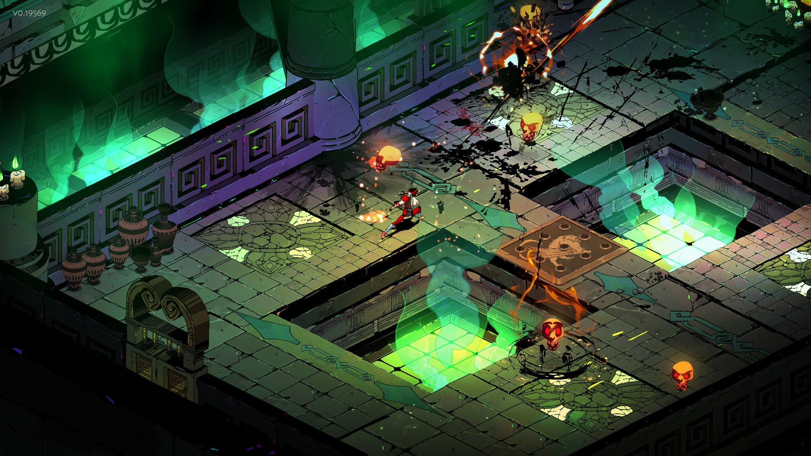
The main difference is that Hades loads one chamber at a time behind a door, while we wanted a floor
to read as one continuous map. To get there, I built the generator around hand-authored isometric
room and hall prefabs instead of building every tile at runtime.
ChunkSpawner selects a prefab from the pool for the current world,
and MapSpawner places each chunk directly after the previous one.
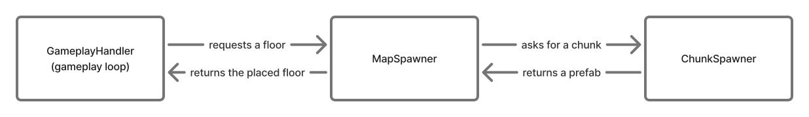
MapSpawner, and
ChunkSpawner connect when a floor is generated.It took a few passes to get there. My first version in February just lined chunks up one after another, and most of the next week went into adjusting it: changing the perspective to fit the isometric art, adding smaller chunks so floors didn't feel like the same few rooms repeated, and working on the camera so it followed the player across chunk boundaries. Later I added a camera confiner, using the Cinemachine Confiner 2D extension from Unity's Cinemachine package, so the view stayed inside the generated map.
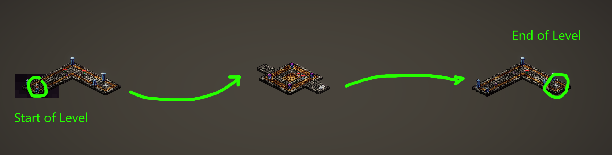
The excerpt below shows the placement step; prefab validation and scene references are omitted.
GameObject prefab = chunkSpawner.GetRandomMapChunk(band);
GameObject chunk = Instantiate(prefab, chunkContainer);
chunk.transform.position = new Vector3(_chunkOffset, 0, 0);
Tilemap tilemap = chunk.GetComponentInChildren<Tilemap>();
float width = tilemap != null ? tilemap.localBounds.size.x : 10f;
_chunkOffset += width + chunkSpacing;Each chunk's width comes from its own tilemap bounds rather than a fixed size, which is what let the smaller chunks sit next to the larger rooms without overlapping or leaving uneven gaps.
Spawning Enemies
Enemy placement uses a separate tilemap layer painted by level designers. The spawner filters out cells near the entry teleporter, picks from the remaining cells, and raycasts beneath candidates to reject cells over gaps.
My first attempt at picking cells was Poisson disk sampling, which spreads points out so no two land closer than a minimum distance. It was on the right track, but it was more complex than this problem needed: I had to tune a radius per chunk size, keep a grid and an active list of candidates, and still throw out any point that fell off the painted layer. Since designers were already choosing where enemies could appear by painting that layer, I didn't need the spacing guarantee on top of it.
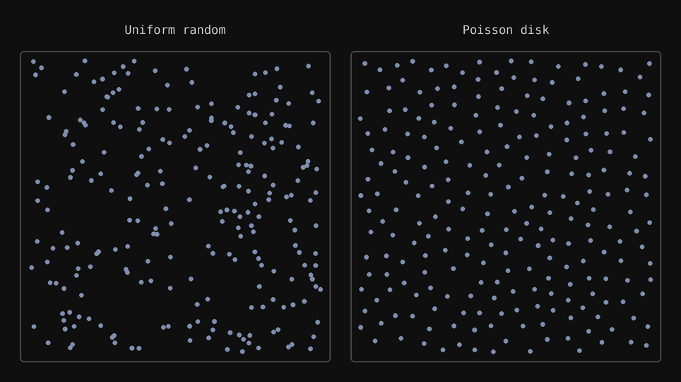
I switched to a Fisher–Yates shuffle instead. Shuffling the painted cells once and taking them in order gives every cell the same chance of being picked, never repeats a cell, and runs in a single pass over the list. It also made difficulty easy to express, since a harder floor just takes a larger fraction of the shuffled cells:
int targetCount = Mathf.Clamp(
Mathf.RoundToInt(availableTiles.Count * fillFraction),
1,
availableTiles.Count);
Shuffle(availableTiles);
for (int i = 0; i < availableTiles.Count && placed < targetCount; i++)
{
Vector3 spawnPos = enemySpawnTilemap.GetCellCenterWorld(availableTiles[i]);
if (!IsSpawnPositionOverGround(spawnPos))
continue;
GameObject prefab = GetRandomEnemyType(enemyPool);
Instantiate(prefab, spawnPos, Quaternion.identity, parentTransform);
placed++;
}If too few candidates pass the ground check, a fallback pass uses the remaining painted cells to meet the target count. In play, the resulting enemy layouts were indistinguishable from the Poisson version, since the painted layer already kept enemies spread out.
Floor Progression as a Coroutine
I connected map generation to the run controller. GameplayHandler
owns the floor state
and sequences the preview, gameplay, cleanup, reward screen, and next floor.
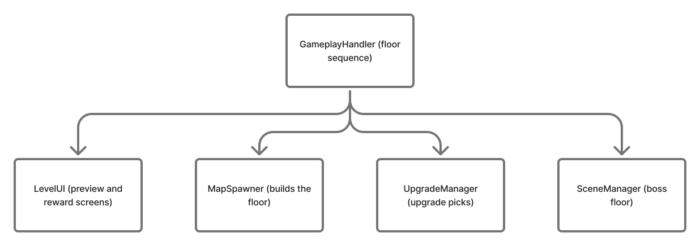
GameplayHandler calls as it runs a floor,
in the order the sequence reaches them.The loop took longer to settle than anything else I worked on. Between late March and the April build I reworked it several times. Early on, the flow was spread across separate scenes, and transitions between them were hard to keep in order. I eventually removed the separate gameplay scene and moved the whole sequence into one coroutine, where each step waits for the previous one to finish. Waiting for explicit confirmation at each transition keeps a reward screen or scene change from racing ahead of player input.
yield return new WaitUntil(() => CurrentState == FloorState.FloorEnd);
EnablePlayerMovement(false);
if (_playerObject != null)
_playerObject.SetActive(false);
DisableAllEnemies();
yield return AwardFloorXpAndRewards();
if (WorldProgression.IsBossFloor(_floorIndex))
{
SceneManager.LoadScene(bossSceneName);
yield break;
}
RollNextFloor();
StartCoroutine(FloorSequence());Because the whole loop is one coroutine, the boss floor is just an early exit: it loads the boss scene and stops. Every other floor rolls the next one and starts the same sequence again.
Scoring a Floor
Floor XP combines kills, enemies avoided, and a time bonus. The time component falls toward zero as the player exceeds a par time based on chunk count and difficulty. That way, playing fast is rewarded, but kills still count.

The reward screen shows the components separately before the game opens any upgrade choices.
Building Upgrades as Reusable Assets
I did not want every card to become a special case in the menu or upgrade manager. Each upgrade is
represented by two ScriptableObject assets with the same
upgradeID. An UpgradeDisplaySO holds the card-facing
data: name, description, image, rarity, and category. An
UpgradeEffectsSO holds the gameplay side: the shared ID, stack limit, and a
list of effect objects.
The display asset is plain data. Nothing in it affects gameplay, so an artist or designer can change a card's name, art, or rarity without touching code:
[CreateAssetMenu(fileName = "UpgradeDisplay_", menuName = "Upgrades/Upgrade Display")]
public class UpgradeDisplaySO : ScriptableObject
{
[Header("Identity")]
public string upgradeID; // must match the paired UpgradeEffectsSO
[Header("Card Face")]
public string upgradeName;
[TextArea(2, 5)]
public string upgradeDescription;
public Sprite cardImage;
[Header("Upgrade Meta")]
public UpgradeRarity rarity;
public UpgradeCategory category;
}The effects asset carries the same ID, plus everything the game needs to apply the upgrade. Its methods only loop over the effect list, so the asset itself never needs to know what any one effect does:
[CreateAssetMenu(fileName = "UpgradeEffects_", menuName = "Upgrades/UpgradeEffects")]
public class UpgradeEffectsSO : ScriptableObject
{
[Header("Identity")]
public string upgradeID; // primary key shared with the display asset
[Header("Stacking")]
public int maxStacks = 1; // -1 = unlimited
public bool scaleWithStacks = false;
public UpgradeTrait[] traits;
[Header("Effects")]
[SerializeReference]
public List<UpgradeEffect> effects = new();
public void Apply(UpgradeContext ctx, int stackCount = 1)
{
foreach (UpgradeEffect effect in effects)
effect?.Apply(ctx);
}
// Remove, Tick, and BuildAutoDescription follow the same pattern
}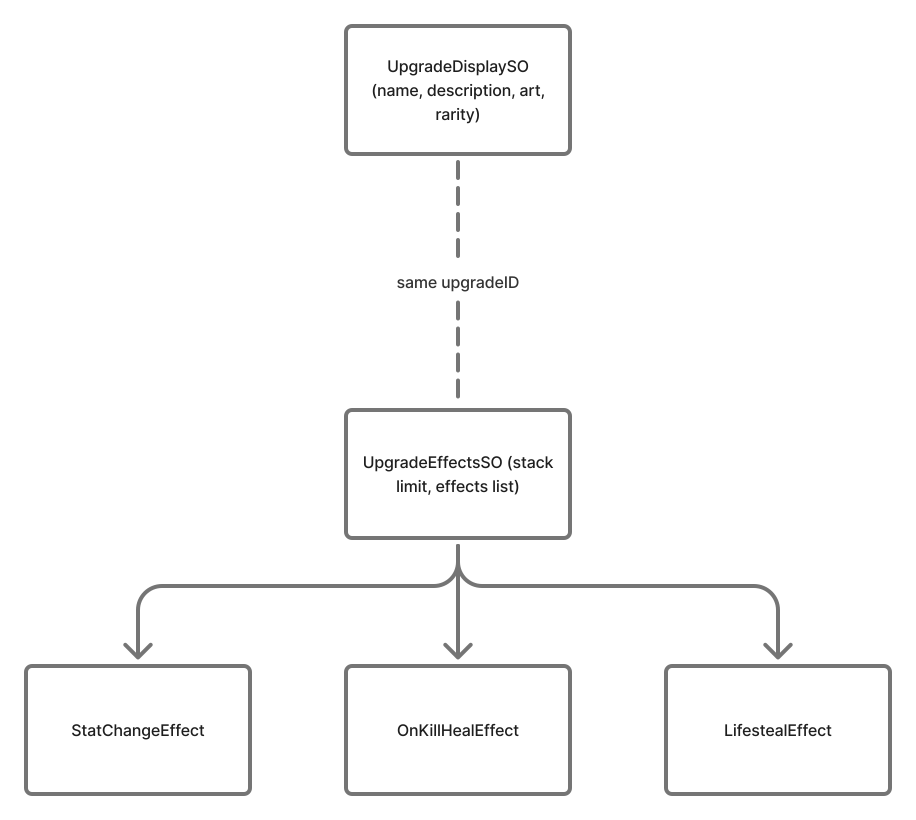
upgradeID (dashed line). The effects list can mix different effect
subclasses in one upgrade.The three effects in the tree are just an example of what an effects asset might contain. A simple upgrade may hold a single effect, while another can combine several different effect types, each with its own values, in the same list.
Because of this split, the card UI and the upgrade manager don't depend on each other.
Adding a New Upgrade
The manager has serialized registries for both asset types. At startup it builds dictionaries keyed by ID. To add a card, I create one display asset and one effects asset, assign the same ID to each, then add the pair to the manager's registries. If an effects asset has no matching display, it cannot be offered; if the ID is duplicated, the manager reports it instead of silently treating two cards as one.
- Create an
Upgrade Displayasset for the card title, description, image, rarity, and category. - Create an
UpgradeEffectsasset with the sameupgradeID, then set its stack limit. Use-1for no limit. - In the effects list, add one or more serializable
UpgradeEffectsubclasses and configure their fields from the Inspector. A multi-part upgrade can combine existing effect types. - Add the two assets to the
UpgradeManagerdisplay and effect registries.
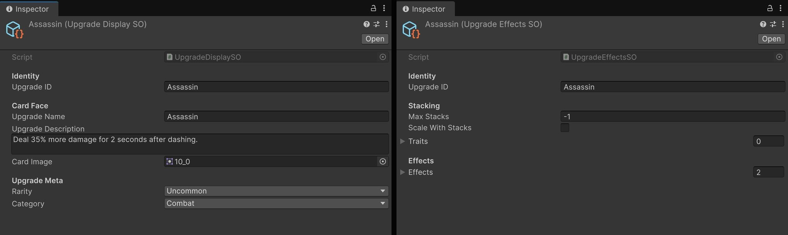
Effects as Interchangeable Classes
The effects list is polymorphic: it is serialized with [SerializeReference] and stores
instances of classes derived from UpgradeEffect. Each effect implements the same small
contract. Apply changes the run, Remove reverses that change, and
GetDescription provides readable text. An effect can also opt into per-frame updates
with NeedsTick and Tick. Unity serializes the concrete subclass and its
fields into the asset, so tuning an amount or composing another effect does not require a new
menu branch.
Every effect subclass implements the same small base class:
[System.Serializable]
public abstract class UpgradeEffect
{
public abstract void Apply(UpgradeContext ctx);
public abstract void Remove(UpgradeContext ctx);
public virtual bool NeedsTick => false;
public virtual void Tick(UpgradeContext ctx, float deltaTime) { }
public abstract string GetDescription();
}
A reusable example is StatChangeEffect: each instance names a player stat and stores
additive multiplier and flat adjustments. The effect class implements the operation once, and each
asset supplies its own values. Its Remove method applies the inverse adjustments, which
makes the same effect safe to clear when a run ends.
public override void Apply(UpgradeContext ctx)
{
if (multiplier != 0) ctx.Stats.AddMultiplier(stat, multiplier);
if (flat != 0) ctx.Stats.AddFlat(stat, flat);
}
public override void Remove(UpgradeContext ctx)
{
if (multiplier != 0) ctx.Stats.AddMultiplier(stat, -multiplier);
if (flat != 0) ctx.Stats.AddFlat(stat, -flat);
}
That reversible interface also defines how an upgrade leaves a run. When an upgrade is revoked or
the player dies, the manager calls Remove for each acquired stack and clears its stack
tracking. For temporary effects, Tick gives the manager one shared update path instead
of requiring every effect to create its own MonoBehaviour.
Offering Choices
When a reward screen opens, the manager builds a pool of cards the player is still allowed to take. A card is skipped if it has no matching effects asset or has already reached its stack limit:
foreach (UpgradeDisplaySO display in allDisplays)
{
if (!_effectMap.TryGetValue(display.upgradeID, out UpgradeEffectsSO effect))
continue;
int stacks = GetStack(display.upgradeID);
if (effect.maxStacks != -1 && stacks >= effect.maxStacks)
continue;
float weight = RarityWeight(display.rarity);
pool.Add((display, weight));
}
After filtering, the manager samples choices by rarity and removes each selected card from the
temporary pool, so one screen cannot show duplicates. A maxStacks value of
-1 means unlimited; otherwise, a card stops appearing after reaching its configured
limit. Selecting a card looks up its effects by the same ID and applies each effect with an
UpgradeContext containing the player, stats, status effects, spawn manager, and game
rules.
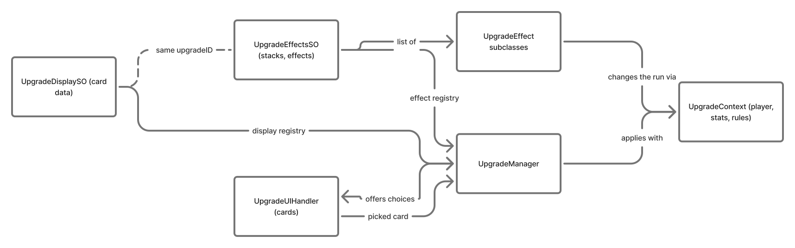
UpgradeContext.Fall 2026: Programming Director
In Fall 2026 the project moved from the R&D prototype into WolverineSoft's studio GitLab, and I
took on the role of programming director. With a larger programming team, my work shifted from
mostly writing systems myself to reviewing changes, keeping main stable, and
restructuring code so new programmers could add features without editing the same few files.
Reviewing and Merging Team Work
I handled the team's merge requests, merging 34 between September and November. When a branch had
fallen behind main, I resolved the conflicts so the contributor was not blocked.
The merged work covered:
- Core systems: a weapon framework built on
WeaponData, a save system, a basic inventory, data-driven world setup, and enemy defeat progression. - Enemies and bosses: enemy pathfinding, a grabber enemy, shield enemy reflection, boss refactoring and boss room fixes, and the Verifier miniboss for World 2.
- Weapons: a flamethrower and a time bomb, plus a fix for projectiles passing through obstacles.
- UI and tools: the pause menu, a settings menu with master volume, UI hotkeys, and an in-editor debug menu.
- Documentation: teammates' wiki pages on player movement, health, damage, camera tracking, status effects, enemy spawning, enemy archetypes, and the HUD.
Refactoring for a Larger Team
Several of my own changes were aimed at making the codebase easier to share. With more people working at once, the files everyone had to touch were where merge conflicts piled up, so most of these refactors break one shared file into smaller pieces with a clear place for new work to go.
Upgrade Behaviors
PlayerUpgradeRuntime had grown into one large class that held the
logic for every upgrade, so adding a card meant editing the same file as everyone else. I split it into
small behavior classes (dash, on-hit, on-kill, defense, status, and conditional damage), each
implementing only the interfaces it needs:
public interface IUpgradeBehavior
{
void Initialize(UpgradeBehaviorContext context);
void Activate();
void Deactivate();
}
public interface ITickingUpgradeBehavior
{
void Tick(float deltaTime);
}
public interface IAttackDamageModifier
{
void ModifyAttack(UpgradeAttackQuery query, ref UpgradeAttackBonuses bonuses);
}
public interface IIncomingDamageModifier
{
float GetDamageReduction();
}
// ...plus on-attack, status-rule, and energy bolt hooks
The runtime now just keeps a list of registered behaviors and asks each one whether it cares about an
event. Building an attack's damage, for example, only touches behaviors that implement
IAttackDamageModifier:
public AttackDamageSnapshot BuildAttackSnapshot(AttackKind attackKind, Vector2 origin,
EnemyBase target, int nearbyEnemyCount)
{
var query = new UpgradeAttackQuery(attackKind, origin, target, nearbyEnemyCount);
var bonuses = new UpgradeAttackBonuses();
foreach (var registration in _snapshot)
if (registration.Behavior is IAttackDamageModifier modifier)
modifier.ModifyAttack(query, ref bonuses);
return new AttackDamageSnapshot(bonuses.Flat, bonuses.Multiplier, bonuses.ConsumeSpiteStacks);
}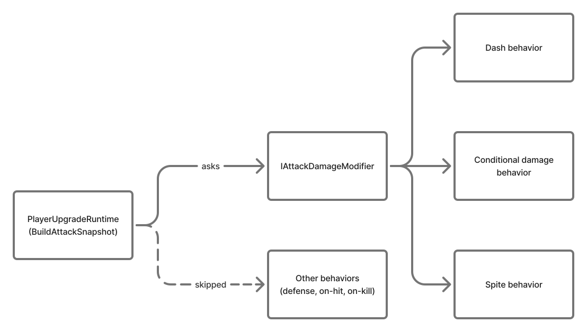
IAttackDamageModifier are asked; the rest are skipped.
The arrows lead to the dash, conditional damage, and spite behaviors because each of them changes how
hard an attack hits, so each implements IAttackDamageModifier.
The dash behavior adds a damage multiplier for a short window after the player dashes. The
conditional damage behavior adds flat damage based on the situation: the number of nearby enemies
for a melee attack, the distance to the target for a ranged one, and how much health the player is
missing. The spite behavior builds up stacks when the player takes damage, then spends them on a
damage multiplier for the next attack. Defense, on-hit, and on-kill behaviors respond to other
events, so building an attack's damage never calls them.
This was my first time using the C# interface keyword for a Unity project,
and I was very happy with how much more organized the code became after the change.
UI Manager
Before, each menu and HUD panel managed its own visibility. I added a central
UIManager that every panel registers with by ID, so showing or hiding
any screen goes through one place:
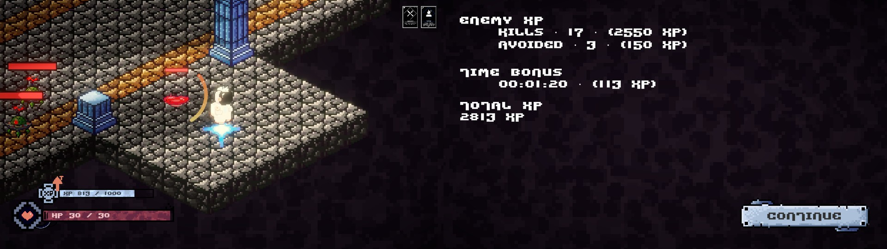
Panels can share an exclusive group, and showing one menu in a group hides the rest, so two menus in the same group can never be open at once:
[Serializable]
private sealed class ManagedPanel
{
public string id;
public GameObject panel;
public string exclusiveGroup;
public bool initiallyVisible;
}
public bool ShowPanel(string panelId)
{
if (!TryGetPanel(panelId, out ManagedPanel requested))
return false;
// Showing a menu hides every other panel in its group
if (!string.IsNullOrWhiteSpace(requested.exclusiveGroup))
foreach (ManagedPanel panel in _panelsById.Values)
if (panel.id != requested.id && panel.exclusiveGroup == requested.exclusiveGroup)
SetPanelActive(panel, false);
SetPanelActive(requested, true);
if (!string.IsNullOrWhiteSpace(requested.exclusiveGroup))
ActiveMenuId = panelId;
return true;
}The manager also remembers which menu was open before Settings, so closing Settings returns you to whichever menu you opened it from.
Chunk Lookup
Once floors were stitched from chunks, other systems needed to ask where things are on the floor,
such as whether two positions are in the same chunk. I moved that geometry out of MapSpawner into a
small MapChunkLookup class, which merges each chunk's tilemap bounds and
checks which one contains a point:
public bool TryGetChunkIndexAtWorldPosition(Vector2 worldPos, out int index)
{
index = -1;
for (int i = 0; i < _chunks.Count; i++)
{
if (!_chunks[i] || !TryGetMergedTilemapWorldBounds(_chunks[i], out Bounds worldBounds))
continue;
Vector3 p = new Vector3(worldPos.x, worldPos.y, worldBounds.center.z);
if (worldBounds.Contains(p))
{
index = i;
return true;
}
}
return false;
}
MapSpawner still owns the list of placed chunks and just forwards these
questions to the lookup, so the spawner stays focused on building the floor.
Pooled Audio
I refactored the audio manager so sound effects play through a small pool of
AudioSource components. The pool hands back one that has finished
playing and only creates a new source when every existing one is busy:
public AudioSource GetAvailableSource()
{
foreach (var source in _sources)
if (source != null && !source.isPlaying)
return source;
return CreateSource(); // every source is busy, so grow the pool
}
// AudioManager: every sound effect goes through the same path
private void PlaySfxPooled(AudioClip clip, float volumeScale, float pitch, float panStereo)
{
AudioSource src = _sfxPool.GetAvailableSource();
src.pitch = Mathf.Clamp(pitch, 0.5f, 2f);
src.panStereo = Mathf.Clamp(panStereo, -1f, 1f);
float v = sfxVolume * Mathf.Clamp01(volumeScale);
src.volume = v;
src.PlayOneShot(clip, v);
}
Since every effect goes through PlaySfxPooled, volume, pitch, and
panning are set in one place instead of at every call site, and sources are reused rather than
created for each sound.
Project Wiki
The repository includes a wiki in docs/, which has grown to about 35 pages, so new
programmers can learn a system before changing it.
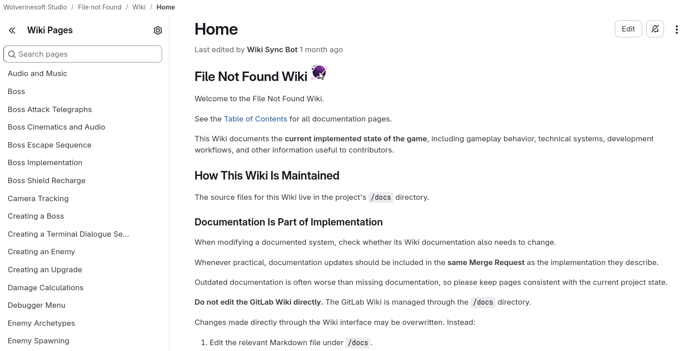
docs/ folder and synced to the wiki.I kept the home page and table of contents up to date and wrote or co-wrote pages on creating upgrades, the upgrade interface, the UI manager, events, audio, map generation, room prefabs, teleporters, floor progression, and importing a world tileset.
Project Source
Source files referenced above: Studio W26 R&D repository. Fall 2026 work is in WolverineSoft's private studio GitLab.